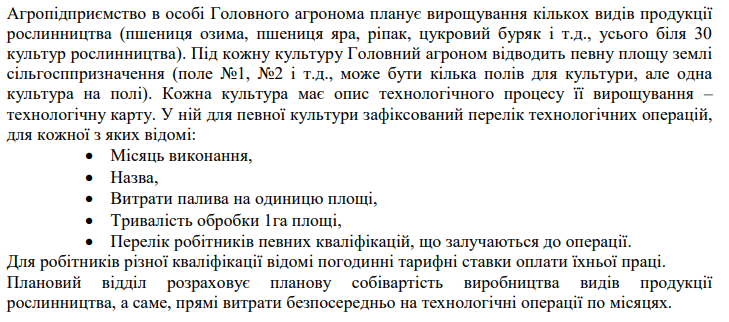

Національний технічний університет України
«Київський політехнічний інститут імені Ігоря Сікорського»
Факультет Інформатики та Обчислювальної Техніки
Кафедра Інформаційних Систем та Технологій
Опис
Завдання 4 курсової роботи з дисципліни
«Бази даних»
Створення застосунку
Виконав студент ІС-03 Сабадаш Дмитро
Перевірив Попенко В. Д.
Тема №9 (“Планування виробництва сільгосппродукції”)

Діаграма БД